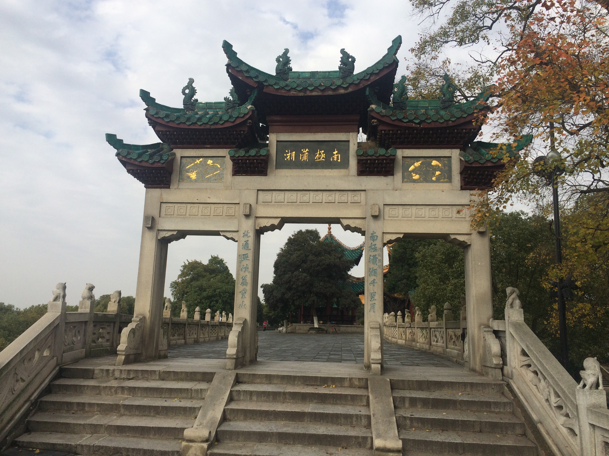

历史沿革
先秦至秦汉
岳阳地区早在3000多年以前就有人居住。
夏商为荆州之域、三苗之地。春秋属楚，亦为麋、罗二国地，
战国时仍为楚地。周敬王时期在此修筑西糜城，为岳阳境内筑城之始。
秦灭六国，推行郡县制，岳阳大部分地区隶属长沙郡罗县。
西汉时，今岳阳、临湘及平江、湘阴、汨罗分属长沙国（长沙郡改）下隽县和罗县，
今华容县则属南郡古华容县和武陵郡孱陵县。东汉改长沙国为长沙郡，分罗县东部今平江一带建汉昌县。
东汉建安十五年（210年），孙权将汉昌、下隽等县建为汉昌郡，郡治在今平江县金铺观，这是岳阳市建郡之始。
黄龙元年（229年），分孱陵县南部今华容县一带置南安县，并撤消汉昌郡，改汉昌县为吴昌县。鲁肃在此修巴丘城。
两晋时期

晋武帝太康元年（280年），分下隽县西部今岳阳、临湘一带建巴陵县。
惠帝元康元年（291年）分长沙郡北部新置建昌郡，辖蒲圻、下隽、吴昌、
巴陵四县， 郡治设于巴陵县城。而南安县则属南平郡（南郡改）。
咸康元年（335年），废建昌郡，仍并入长沙郡。南朝宋元嘉十六年（439年），
分长沙郡北部的巴陵、 蒲圻、下隽县和江夏郡的沙阳县置巴陵郡。郡治设在巴陵城，
从此岳阳城区一直作为郡治所。但吴昌、罗县仍属长沙郡，安南县（南安县改）仍属南平郡。
后分罗县 等地置湘阴县，齐时属长沙郡。梁时又分罗县、吴昌县新置玉山县、岳阳县（非今岳阳县）、
湖滨县，并以此五县及湘阴县建岳阳郡。郡治设岳阳（今汨罗长乐镇）。
隋唐时期
隋文帝开 皇九年（589年），废郡为州，撤销吴昌县、湖滨县，并入罗县；
又废岳阳郡，将玉山县、湘阴县并入岳阳县，改岳阳县为湘阴县。并废除巴陵郡，
建为巴州。隋 开皇十一年（591年），改巴州为岳州。开皇十八年（598年）改安南县为华容县，
隶属岳州，华容至此列入岳阳市范围。至此，岳州辖巴陵、罗县、湘阴、华 容及沅江五县，
今岳阳各县（市）全部归属一州。唐高祖时，罗县并入湘阴县。中宗时分湘阴东部设昌江县，仍属岳州。
五代时后唐改昌江为平江县。
宋元时期
宋太宗时将湘阴县改属潭州。不久分巴陵县东北部建为王朝县，后改称临湘县，仍属岳州。哲宗时将沅江县改属鼎州，
岳州辖巴陵、临湘、平江、华容四县。绍兴二十五年（1155年），因秦桧恶岳州名同岳飞姓，改岳州为纯州，
旋恢复旧称。元至元十三年（1276年），改岳州为岳州路。唯湘阴属潭州。
明清时期
明太祖洪武二年（1369年），改岳州路为岳州府。洪武三十年（1397年），将常德府所属的澧州
（辖安乡、 石门、慈利等县）改属岳州府。清朝仍称岳州府。雍正年间，因岳州府所属辽阔，中隔洞庭，
有鞭长莫及之虑，遂将湖西的澧州分出。清采取省道府县四级制，湖南 省设四道，岳州府属岳常澧道，
光绪二十五年（1899年），屈服于英国的压力，清政府开辟岳州为通商口岸，将原驻常德的岳常澧道，移驻岳州。
近现代
民国二年（1913年）废府存县，改巴陵县为岳阳县。民国五年（1916 年）全省分为三道，
岳阳、临湘、平江、湘阴（包括今汨罗）、华容县均属湘江道。民国十一年（1922年）废除道制，
各县均直属湖南省。民国二十六年 （1937年）12月湖南设立九个行政督察区（后增为十区）。
第一行政督察区驻岳阳，辖岳阳、临湘、平江、湘阴、长沙、浏阳、湘潭、醴陵、益阳、宁乡十县
（后调整为八县，将益阳、宁乡划出）。华容县属第四行政督察区。
中华人民共和国成立后，划湖南省为十个专员公署，岳阳、临湘、
平江和湘阴属长沙专署，华容县属常德专署（后改属益阳专署）。1952年，长沙专署改称湘潭专署。
1960年分岳阳县设立岳阳市，1962年撤销，仍划归岳阳县。 1964年，又从湘潭专署划出岳阳、平江、
临湘、湘阴及益阳专署的华容县设立岳阳专署，专署驻岳阳。1966年，分湘阴县东部建汨罗县。
1970年岳阳专 署改称岳阳地区，地区仍驻岳阳县。1975年，恢复岳阳市，属岳阳地区。1981年10月，
撤销岳阳县，并入岳阳市。1983年2月，岳阳市升为地级市， 由省直辖；重新设立岳阳县；撤销岳阳地区，
所属的汨罗、平江、华容、临湘4县划归岳阳市；湘阴县划归长沙市。同年7月，恢复岳阳地区，
辖长沙市的湘阴县和 岳阳市的汨罗、平江、华容、临湘4县，驻岳阳市。1984年，岳阳市内设3区：
南区、北区（1984年从临湘县析出大部分地区而置）、郊区。1986年1 月撤销岳阳地区，实行市管县，
将原地区各县划归岳阳市。1987年，撤销汨罗县，改设汨罗市。1992年撤销临湘县，设立临湘市。1996年，扩大城区范围，
撤销南区、郊区，设岳阳楼区、君山区；北区更名为云溪区。